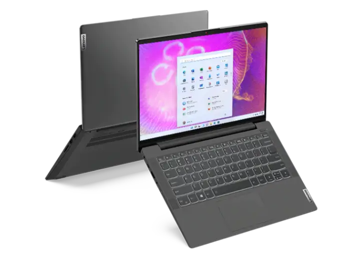

Portatiles
Apple
Cuando tantos profesionales utilizan un MacBook es por varios motivos. Estos portátiles son muy
fiables y potentes, perfectos para acompañar a cualquier hogar y hacer tu vida más fácil. Si estás
pensando en comprar uno, hemos preparado esta guía de compra que seguro que te es de gran ayuda.
Existen muchas y buenas razones para comprar un MacBook en la actualidad. Quizá seas de Mac de
toda
la vida, o estás cansado de Windows y buscas la estabilidad de Apple. Vamos a ver todo lo que
necesitas saber para comprar un MacBook en 2022.
Macbook Air

El Macbook Air M2 tiene un peso de solo 1,24 kilos, con el procesar Apple M2 como su corazón
acompañado con hasta 24 GB de memoria RAM y hasta 2 TB de almacenamiento interno SSD.
La pantalla es de tipo Liquid Retina con 13,6 pulgadas, una resolución de 2.560 x 1.664
píxeles con 224 ppp. En cuanto al teclado, cuenta con Magic Keyboard retroiluminado. Además,
también incorporan conectividad WiFi 6, Bluetooth 5.0 y dos puertos Thunderbolt 4.
Macbook Pro
Actualmente, el único modelo de los MacBook Pro que monta el chip M2 es el que lleva una pantalla Retina IPS de 13 pulgadas con resolución 2.560 por 1.600 píxeles y 227 ppp. Al procesador hay que añadirle la posibilidad de montar hasta 24 GB de RAM y con un máximo de 2 TB de almacenamiento interno. El ordenador cuenta con nuevo teclado Magic Keyboard retroiluminado, Touch Bar y Touch ID
Lenovo
Esta marca cuenta con una gran variedad de portatiles, tiene laptops tradicionales, 2 en 1, ultralivianas, gaming, y workstations moviles. tambien con muchos tipos de referencia como el thinkpad, thinkbook, legion, yoga, e ideapad. que vienen con distintos tamaños y con diferentes caracteristicas.
laptops tradicionales
Laptop ThinkPad E14 3era Gen (14", AMD)

caracteristicas
- Laptop de 14” con procesamiento AMD Ryzen™
- Pantalla FHD y sonido Harman
- Diseño minimalista
- Perfecta para conferencias web y entretenimiento
- PC diseñada para empresas, maestros o estudiantes
IdeaPad 5i (14”, Intel)
caracteristicas
- Procesamiento premium Intel® Core™ hasta 12va generación
- Pantalla de 14” hasta FHD con bordes delgados & gráficos NVIDIA® GeForce® opcionales
- Obturador de privacidad para la webcam y lector de huellas opcional
- Dolby Audio™ hará que tu música o película favorita suenen de maravilla
Gaming
Legion Slim 7i 7ma Gen (16", Intel)

caracteristicas
- Diseño delgado con toneladas de potencia gracias a los procesadores Intel® Core™ de 12va generación
- Ve cada detalle con las GPU NVIDIA® GeForce RTX™ Serie 30
- Supera los límites del rendimiento con hasta 24 GB de RAM DDR5
- Disfruta de imágenes de primer nivel en una pantalla de 16″ hasta WXQGA, mini-LED IPS opcional y actualización de frecuencia variables según el modelo
- Mantén la calma y la compostura y prepárate para atacar con Coldfront 4.0
ThinkPad X1 Extreme Gen 5 (16" Intel)
caracteristicas
- Potente equipo de 16" con hasta Intel® Core™ vPro® i9 de 12va generación
- Siempre conectado con 5G opcional, además de la opción WiFi 6/6E
- Increíbles opciones de tarjeta gráfica NVIDIA® GeForce RTX™
- Videollamadas estelares con cámara FHD, Dolby Atmos® y altavoces de alta potencia
- Ideal para profesionales creativos y jugadores por igual